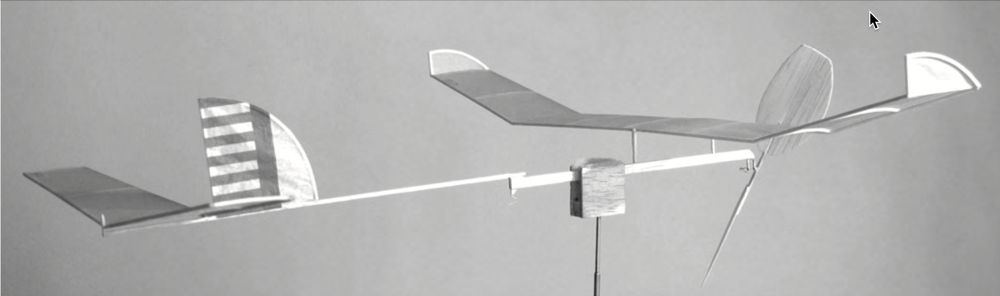

Introduction
Contents
Introduction¶
At one of my local club’s indoor flying sessions, I was holding a new airplane ready for its first flight. The model had been hastily constructed a few days earlier, and I had no idea what it would do. I proceeded in typical builder fashion. I wound up the motor with a few hundred turns, held it at the right angle and turned it loose. What was going to happen?
My hope was a nice circling flight in the room slowly climbing toward the ceiling then cruising down to the floor. What actually happened was a lot less exciting. It dove straight downward and turned into a floor scraper, waddling around a few times before hitting an immovable object.
I had work to do, and I did that. Eventually, with some help from club experts, I managed to get tha airplane to do about two minutes, which I was pleased to seeon its first adventure flying. The lingering question was this: What kind of flight times should I expect this airplane to achieve?
I decided to explore techniques other builders have come up with to predict flight times. In looking at past issues of the NFFS Symposium, I came across articles by Doug McLean [McLean, 1976] and Walter Erbach [Erbach, 1990]that provided simple ways to come up with an estimate, based on some relatively simple theories. Unfortunately both articles were published at a time when computers were really scarce (anyone remember that far back?). Today, almost everone has access to a computer, so I decided to put together some Python code that would implment these ideas, and see how they perform today.
In this paper, we will work through the development of a few python tools that can help you predict the times our indoor model should achieve. we will also look at some interesting Python tools that help you make sure your code is doing exactly what you want, and tools that will help you validate your work against the theory used t produce those estimates. SInce I have spend almost 20 years teaching students how to develop programs, this article will take the form os a (slightlylong) lecture. Many of the details will be omitted here, but they are available for interested readers at my project website (https://rblack42.github.io/math-magik-flight-time/).
Conducing Research¶
Note
Be sure you know the difference between web search and research!
In aerospace engineering, there are two different kinds of research: theoretical and experimental.
Theoretical Research¶
Theoretical research is founded in mathematics. The goal here is to develop mathematical theories that will help us figure out how a flight vehicle will erform without actually building the vehicle. The entire field of Computational Fluid Dynamics works toward this goal, and we will get a small taste of that in this article.
Experimental Research¶
Experimental research works in the real physical world, not in the mathematical world. Here, we conduct tests on either full-sized flight vehicles, or on smaller models of those vehicles that we test in wind tunnels. Here we are just observers of how nature works, and we carefully record the results of out test in an effort to figure out what is really going on. If we use models, we need to work through how or experiments relate to full-sized vehicles.
Compilmenting Research¶
Both kinds of research are necessary to really move toward an understanding of how things actually fly. Theoretical work needs experimental data to compare the theory to the real world. Experiments are often conducted specifically to validate the theories we are developing. As long as both aspects of our research tend ot agree, we can have confidence n our theories and gain better understandng of the actual mechanics of flight.
In our model world, experiments are actual flights of our indoor models. Careful builders record as many facts about each model and flight as they can, to help in future work. Theoretical work on indoor flight has largely been based on work presented as far back as the Wright Brothers, who were great experimenters!. In past editions of the NFFS Symposium, there have been ,many articles discussing the theories, and presenting graphs showing their results. Sadly, ther is little hope of recreating their results.
Reproducable Research¶
There is a movement in the research world to generate reproducible research. Basically this means that the research is presented in a way that any other interested observer can reproduce and see the exact same results. In the data science world, such research is often developed using a neat Python tool called Jupyter. In fact, the article you are reading was written in that system, and you can install Jupyter on your own system and recreate my work here. The full code for this article is available at GitHub Repo. A web version of this document is also available at nffs-2022-symposium.
I will present some theory here, then create Python code to let us apply that theory and get usable results quickly. I will attempt to validate the theory using data obtained from actual model flights.
Our Test Model¶

I am fortunate to have access to a fellow club member, Gary Hodson, who was the designer of the NFFS Model of the Year Wart A6 {cite}[hodson]. Gary has provided me with data from his record setting flights and I get to see his models fly at our local indoor sessions. I decided to use Gary’s data as a test of the code i will demonstrate in this article.